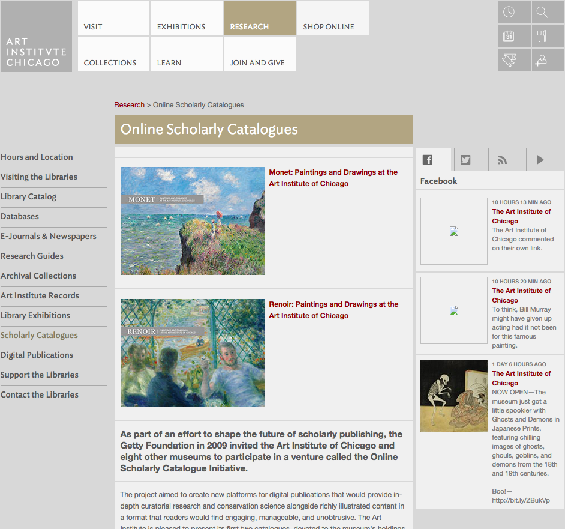

An authoring and publishing environment for online catalogues with full scholarly apparatus
In 2010, the Art Institute of Chicago engaged the IMA Lab of the Indianapolis Museum of Art and began work together to design prototype software for an online catalogue of works by Monet and Renoir in the collection of the Art Institute of Chicago. Envisioned as a tool for art historians and other scholars, the team took inspiration from existing printed materials—wishing to add the best interactive features of the web without compromising the scholarly nature of the text.
In 2011, after months of curatorial research and technical study, the Art Institute of Chicago released brand new scholarship highlighting Claude Monet’s Beach at Sainte-Adresse and Cliff Walk at Pourville in addition to Pierre-August Renoir’s Laundress. These initial catalogue entries were released as part of a usability test of the prototype software developed by the Art Institute of Chicago in collaboration with the Indianapolis Museum of Art. You can preview these catalogues online today at http://www.artic.edu/collections/books/online-scholarly-catalogues
